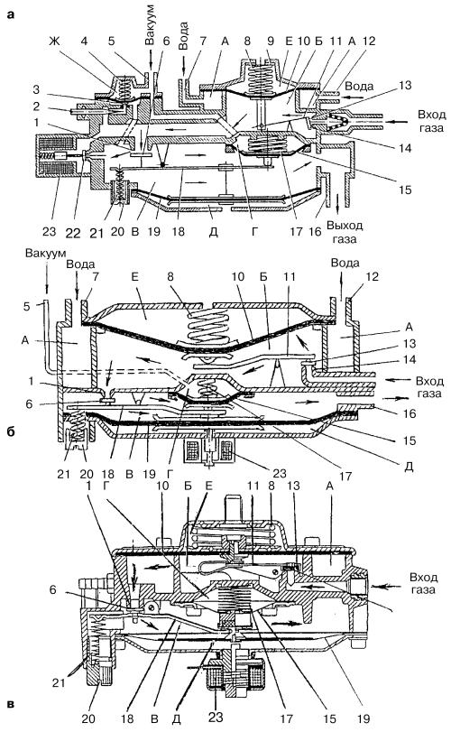
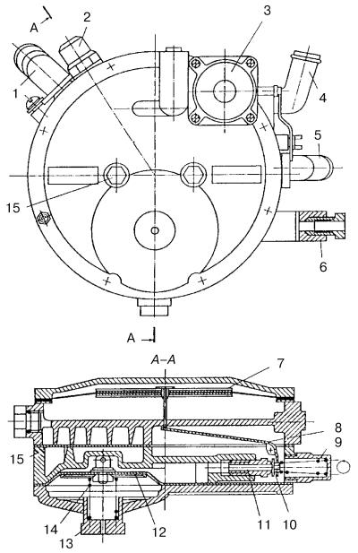

Принцип работы редуктора-испарителя
Рассмотрим более детально работу редукторов трех разных фирм – Новогрудского завода (Белоруссия), итальянских фирм «Bedini» и «Lowato» (рис. 14). Все они работают по одной принципиальной схеме, что и показано на рисунке. И если взять еще десяток редукторов разных фирм, то окажется, что в основе работы каждого из них лежит все тот же единый принцип.

Рис. 14. Схемы редукторов НЗГА (а), «Bedini» (б) и «Lowato» (в): 1 – седло клапана второй ступени; 2 – регулировочный винт системы холостого хода; 3 – клапан холостого хода в сборе с диафрагмой; 4 – пружина клапана холостого хода; 5 – штуцер вакуумного канала; 6 – клапан второй ступени; 7, 12 – патрубки ввода и вывода охлаждающей жидкости; 8 – пружина первой ступени; 9 – регулировочная шайба; 10 – диафрагма первой ступени; 11 – рычаг клапана первой ступени; 13 – клапан первой ступени; 14 – седло клапана; 15 – диафрагма разгрузочного устройства; 16 – канал выхода газа; 17 – пружина разгрузочного устройства; 18 – рычаг клапана второй ступени; 19 – диафрагма второй ступени; 20 – винт регулировки давления во второй ступени; 21 – регулировочная пружина второй ступени; 22 – клапан; 23 – электромагнитное пусковое устройство; А – полость для теплоносителя в испарителе; Б – полость первой ступени; В – полость второй ступени; Г – полость разгрузочного устройства; Д, Е – полости атмосферного давления.
Двигатель еще не работает, зажигание включено, электромагнитный клапан газа открыт.
Газ, поступающий в редуктор по магистрали через открытый клапан (13), заполняет полость (Б) первой ступени, в которой создается избыточное давление.
В результате перепада давлений в полостях (Б) и (Е) (полость (Е) всегда сообщается с атмосферой) на диафрагме (10) возникает усилие, уравновешивающее усилие пружины (8) и давление газа, поступившего через клапан (13) со стороны магистрали.
Диафрагма (10) начинает перемещаться вверх, преодолевая усилие пружины (8), и закрывает связанный с ней через рычажную передачу клапан (13), герметично прижимая его к седлу. Герметичность обеспечивается кольцевым выступом седла и резиновым уплотнителем клапана. Дальнейшее поступление газа в полость (Б) прекращается. РНД в этом случае выполняет функцию автоматического вентиля.
При снижении давления в полости (Б) до определенного значения давление газа на диафрагму (10) становится недостаточным для удержания клапана (13) в закрытом положении. Под действием суммарного усилия от пружины (8) и давления газа во входной газовой магистрали клапан (13) открывается, и давление в полости (Б) возрастает. Вновь поднимается вверх диафрагма (10), преодолевая усилие сжимающейся пружины (8), и клапан (13) закрывается – в полости (Б) устанавливается постоянное избыточное давление.
Давление в первой ступени редуктора можно отрегулировать с помощью регулировочной прокладки (9), изменяющей усилие пружины (8).
Давление в полостях (Г) и (Ж) равно атмосферному, клапан холостого хода (3) под действием пружины (4) закрыт. Разгрузочное устройство удерживает клапан второй ступени (6) под действием пружины (17) в закрытом положении, и клапан оказывается плотно прижатым к седлу (1) дополнительной пружиной (21) регулировочного винта (20).
Перед пуском двигателя.
Пусковой клапан (22) открывается под действием электромагнитного пускового устройства (23), управляемого переключателем вида топлива. После этого газ поступает в полость В второй ступени и через выходной патрубок (16) подается в смеситель.
При пуске двигателя.
Во впускной системе двигателя увеличивается разрежение, которое передается через вакуумный штуцер (5). Диафрагма прогибается, преодолевая усилие пружины (4), и открывает клапан (3) системы холостого хода. Газ поступает в полость В второй ступени, что обеспечивает пуск двигателя (это относится только в редукторам с системой холостого хода; в более поздних моделях редукторов эта система отсутствует). Одновременно в полость (Г) разгрузочного устройства также передается разрежение. Увлекаемый упорным диском рычаг (18) приподнимается, частично открывая клапан (6) второй ступени, вследствие чего газ начинает понемногу поступать через полость В на выход к смесителю, встроенному в карбюратор.
Двигатель работает на холостом ходу.
При работе двигателя на холостом ходу клапан (13) первой ступени редуктора открыт. Газ выходит из полости (Б) редуктора в систему холостого хода через клапан (3) и отверстие регулировочного винта холостого хода (2). Минуя клапан (6), газ попадает в полость (В), несмотря на то, что этот клапан открывается частично. Разгрузочное устройство обеспечивает поддержание в полости (В) второй ступени небольшого избыточного давления 50 МПа (5,1 мм вод. ст.).
Через патрубок (16) отвода газа и тройник-дозатор, установленный за пределами редуктора, газ подается в смеситель, где формируется газовоздушная смесь, которая проходит через карбюратор в двигатель.
Двигатель работает с малой и средней нагрузкой.
По мере открытия дроссельной заслонки первой камеры карбюратора и при относительно небольшой частоте вращения коленчатого вала двигателя расход воздуха, поступающего через всасывающий коллектор и карбюратор, возрастает, разрежение в диффузоре карбюратора усиливается и, как следствие, в полости В понижается давление газа и увеличивается разрежение, которое воздействует на диафрагму (19). Диафрагма прогибается вверх и открывает клапан (6), увеличивая расход газа.
В то же время вследствие разрежения в полости (Г) происходит изгиб диафрагмы (15), поднятие рычага (18), а также открытие клапана (6) на величину, необходимую для впуска небольшого количества газа. Одновременно клапан (13) первой ступени все больше открывается под действием пружины (8), и через него пропускается необходимое количество газа.
Диафрагмы (19) и, частично, (15) автоматически регулируют подачу газа в соответствии с разрежением в диффузоре карбюратора. Из редуктора через патрубок (16) газ поступает в двигатель.
Двигатель работает при полной нагрузке.
Дроссельные заслонки карбюратора приближаются к положению полного открытия. Разрежение в полости (В) возрастает. Это увеличивает перепад давлений в полостях (В) и (Д), (В) и (Б), что в свою очередь приводит к возникновению дополнительных усилий, действующих на диафрагму (19) и клапан (6). По мере открытия клапана (6) увеличивается расход поступающего через него газа.
Разрежение в полости (Б) первой ступени редуктора также возрастает, растет перепад давлений в полостях (Б) и (Е). Под влиянием усилий, воздействующих на диафрагму (10), открывается клапан (13), через который устремляется газ. Чем больше становится нагрузка на двигатель, тем шире открываются клапаны (6) и (13), увеличивая подачу газа, что приводит к обогащению газовоздушной смеси, обеспечивая работу двигателя на полную мощность.
Ниже рассмотрены особенности конструкций редукторов-испарителей разных заводов-изготовителей.
Редуктор-испаритель низкого давления ОАО «Компрессор» Санкт-Петербургского завода (рис. 15) подходит для использования на автомобилях, как с карбюраторной, так и с инжекторной системой питания. Имеет небольшие габаритные размеры: диаметр – 160 мм, толщина 80 мм. Масса редуктора 1,5 кг.

Рис. 15. Схема редуктора-испарителя низкого давления ОАО «Компрессор»: 1 – патрубок выхода газа; 2 – крышка пружины; 3 – пневматический клапан холостого хода; 4, 5 – штуцеры подвода и отвода теплоносителя; 6 – входной газовый штуцер; 7 – диафрагма второй ступени; 8 – рычаг клапана второй ступени; 9, 14 – пружины; 10 – клапан второй ступени; 11 – седло клапана второй ступени; 12 – диафрагма первой ступени; 13 – стакан – камера теплоносителя; 15 – болты.
Газ поступает в РНД через входной газовый штуцер (6) (с фильтрующим элементом для повышения надежности работы клапанов) в первую ступень, где проходит его испарение от теплоносителя в камере (15). Конструкция испарителя дает возможность поддерживать температуру газа на выходе из редуктора близкой к оптимальной на всех режимах работы двигателя. Теплоноситель из системы охлаждения подводится в редуктор через штуцеры (4) и (5). При запуске двигателя в режиме холостого хода клапан (10) закрыт усилием пружины (9). Газ поступает через канал холостого хода. Поступление газа происходит при открытии пускового пневматического клапана (3).
При открытии дроссельной заслонки результирующее усилие на клапан (10) и диафрагму (7) изменяется и открывает клапан. Газ поступает через канал в седле клапана второй ступени (11) и открытый клапан (10) в полость второй ступени, а затем выходит из редуктора через патрубок (1).